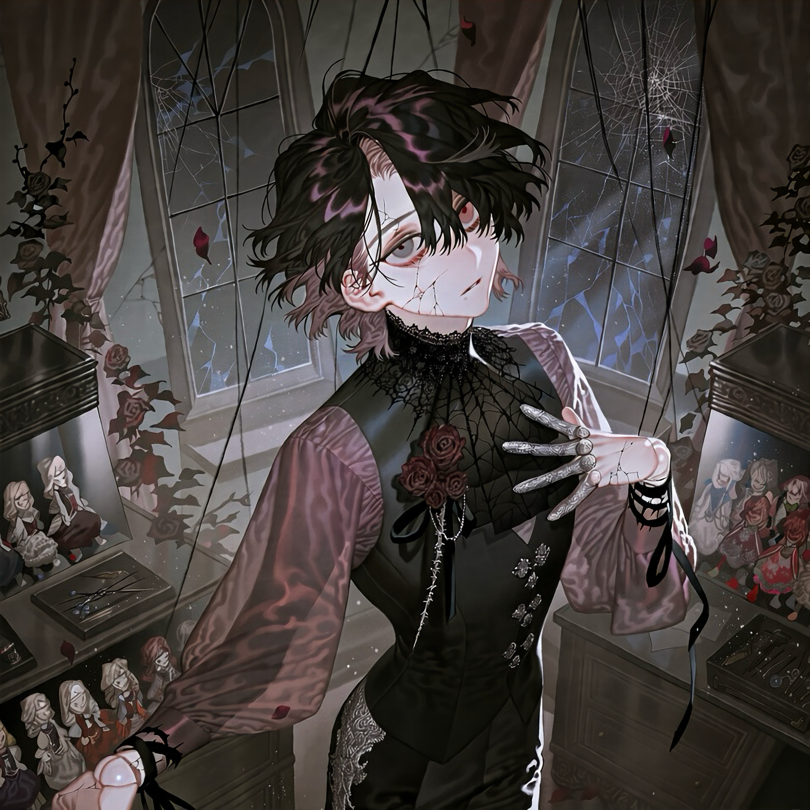

CHARACTER RECORD / 040STATUS: AVAILABLE

✦IMAGE
NOT FOUND
NOT FOUND
アストレウス
✦ WITH OUTFIT服装込み
PROMPT DATATXT / 040
masterpiece, best quality, ultra detailed, 1boy, adult male, 1.4::male ball-jointed doll::, delicate slender physique, elegant androgynous face, pale porcelain skin, 1.5::fine cracks spreading across the porcelain face and body::, visible spherical joints at shoulders, elbows, wrists, knees and ankles, intricate mechanical ball joints, hairline fractures around the joints, dark patterns resembling thorny rose vines visible beneath the cracks, thin well-defined eyebrows, downturned glassy eyes, one muted crimson eye and one cloudy gray eye, vacant melancholic gaze, slightly parted lips, small crack extending from the corner of the mouth, 1.3::short layered black hair with dusty mauve undertones::, uneven wispy bangs, long thin sidelocks, delicate black eyelashes, tiny porcelain fragments missing from one cheek, fine silver repair staples along the temple, black thread stitched through several cracks, gothic doll aesthetic, 1.4::black spiderweb lace and withered rose ornaments::,
high-neck Victorian mourning blouse, fitted black velvet waistcoat, silver filigree buttons, layered translucent sleeves, asymmetrical black lace cravat, decorative chains connecting the collar to the chest, dark brocade shorts, sheer patterned tights, antique silver garters, polished black heeled boots, cracked porcelain finger guards, black ribbons tied around the wrists, dried burgundy roses pinned to the chest, tiny spiderweb embroidery, delicate silver thorn accessories, intricate antique craftsmanship, black, ivory, muted burgundy and tarnished silver palette, beautiful yet unsettling, tragic gothic elegance,
PROMPT NOT ENTERED